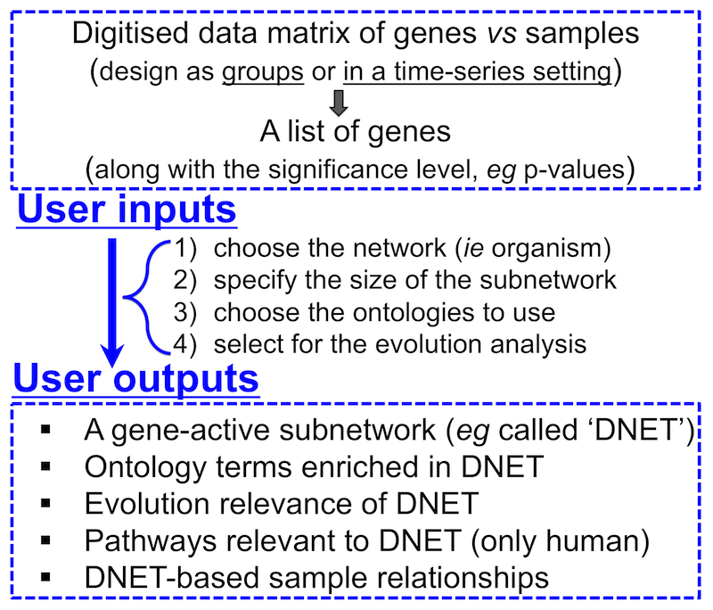

An open-source R package for omics data integrative analysis in terms of network, evolution and ontology
User I/O

Features
- Identification of gene-active networks from high-throughput omics data (eg expression, mutation and replication timing);
- Network-based sample classifications and visualisations on 2D sample landscape;
- Random Walk with Restart for network affinity calculation;
- Semantic similarity between ontology terms (and between their annotated genes);
- Enrichment analysis using a variety of built-in databases;
- A wide variety of built-in RData: ontologies (including
Gene Ontology, Disease Ontology, Human Phenotype and Mammalian Phenotype), gene evolutionary age information and gene association networks in well-studied organisms (including human, mouse, rat, chicken, c.elegans, fruitfly, zebrafish and arabidopsis);
- Support for high-performance parallel computing;
- A tool with rich visuals but less inputs, which can run on
Windows, Mac and Linux.